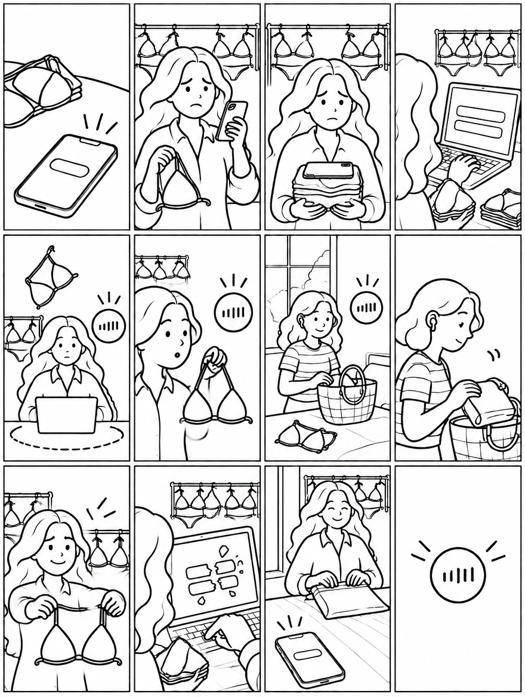
Storyboard · 12 line-art panels
Plot, shot order and framing. Never the drawing style.
gpt_image_2_6 job fdc06c34-48ba-4aa3-b240-75c8e4f3aec5 (v4, this card)One sheet of 12 simple drawings tells Seedance the whole refund story: who's in each shot, where, and in what order. The prompt then only has to add what drawings can't, which is her words, her voice, the sounds, the freeze and the flip.
One pass, no second mode: a storyboard is an unlocked reference task, so ratio and duration stay ours (Task instructions → Unlocked). Limits checked: 6 of 30 images, 4.5 s of 30 s video (one clip, and the 4–30 s per-clip rule passes), 26.8 s of 30 s audio (the ka-ching is cut to exactly 2.0 s, the minimum for an audio reference, so the prompt doesn't have to trim it). Assets are uploaded in order of first appearance, as the FAQ "Incorrect character-to-reference mapping" advises. Spent on the parent card H217, before this card was filed: 5 stills with gpt_image_2_6 (4 storyboard passes and 1 clean studio plate) = 1.25 credits. This Script card (H219) spent nothing. No video was generated.

Plot, shot order and framing. Never the drawing style.
gpt_image_2_6 job fdc06c34-48ba-4aa3-b240-75c8e4f3aec5 (v4, this card)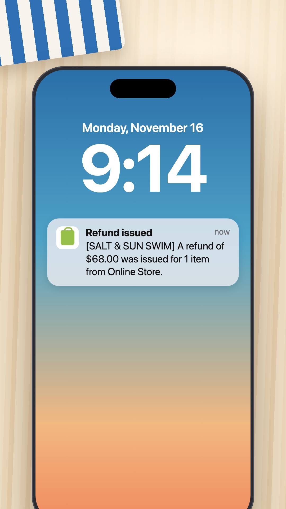
First shot. Shopify-style 'Refund issued', exact words.
New HTML screenshot (b-work/refund.html). Upload at render timeFace, hair and clothes. Cast inside her bikini studio.
Soul 2 job 9a8b15e8-59c4-4f55-b292-8a5645ff4ad8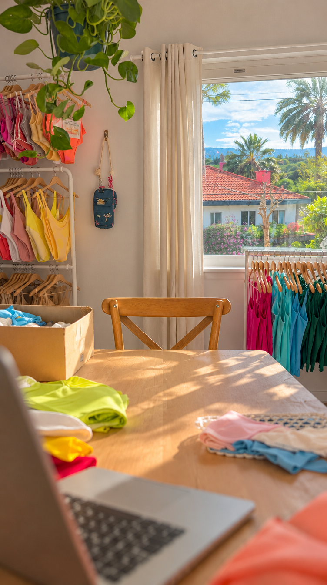
The room for every owner shot. The orb was painted out so Scout can't show up before 8 s; the prompt describes Scout only at 8 s.
gpt_image_2_6 job a17f8839-aacf-4c8f-b35d-6db3a15d49f8 (edit of media db24f683)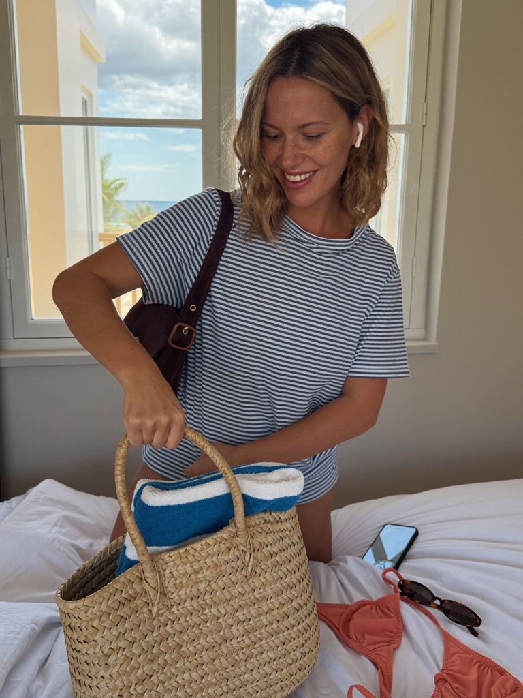
One role: her face, hair and clothes. Her bedroom is written into the prompt in words, not taken from this image.
Soul 2 job 6ccc5f17-498c-424f-8c58-a90ff1577399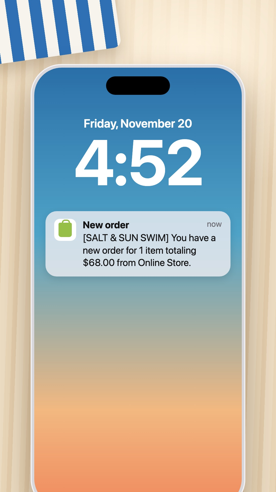
The payoff ka-ching, exact words. Green bag icon kept.
H215 screen/kaching.png. Upload at render timeOne role: the final shot, picture and its own sound as they are. Decided (H219): the clip already says "Scout interviews your shoppers for you. Get free early access." (checked on card H158, r3), so the prompt keeps the clip's audio and does not ask for a new end line. Scout's earlier lines get their voice in words only (calm and warm); Video 1 is not used as a voice reference.
media cae62718-ec02-41f6-8e36-1de097e8427dPlays for the refund AND for the full-price sale. Trimmed locally from the 2.6 s clip (with a 0.3 s fade).
New file: upload a/kaching-2_0s.mp3 at render time (was media 45fb9d1d)Timbre only; the prompt's words win.
media e05a2ee1-0882-4e54-937b-ed2475948d4eTimbre only.
media 4b121290-c867-44a1-8dc3-6046fb0efb15No letters or numbers anywhere on the sheet. Panel 9's top is held by its straps in front of her shirt, a little close to her body; the guide says the panels are a "high-level plot reference", and the line "half a laugh" carries the mood. 880×1168 px, under the output resolution, which the "Fingerprint-like textures" FAQ recommends.
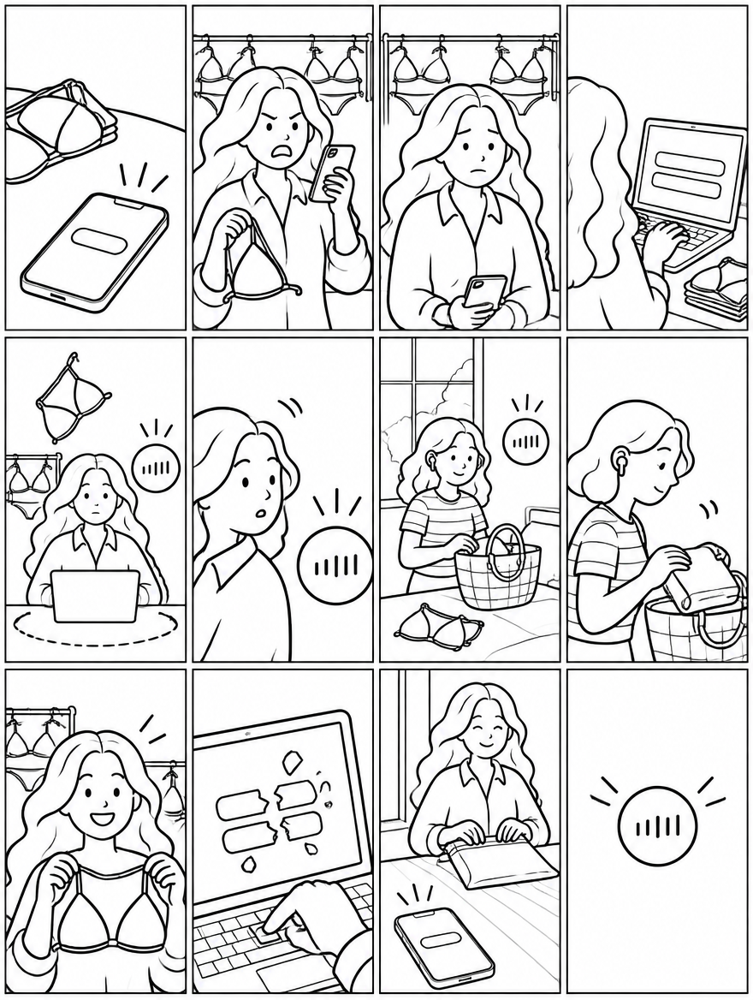
v3 fixed panels 2, 3, 4, 10, 11 but drew the bikini worn in 6 and 9; v4 (above) fixed those two.
It matched every panel, but it's comic-style with detailed faces and hatching, close to the guide's "not recommended" examples, and in panel 5 the owner reacts instead of freezing.
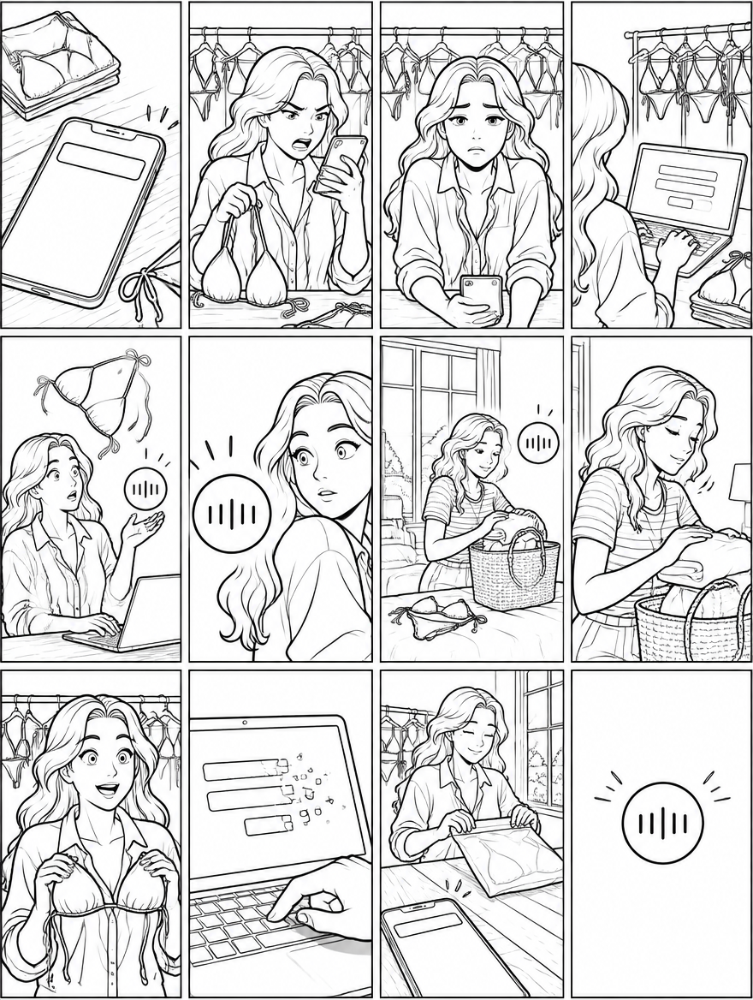
Line-art steps from the guide: Step 1 maps the assets, Step 2 summarises the story, Step 3 describes the plot "according to the storyboard, and at minimum fill in information not shown in the storyboard", using timestamps. Each line uses the "Character's line (emotion): {…}" format from the Subtitles FAQ. Timestamps are whole seconds from 0 to 30 with no gaps. Negative wording appears only for subtitles. This is our draft for comparison; the prompt to send is the sd25-pe version in 04b. Hard cuts between shots, except the two named camera moves.
Card H219, Emile's brief (Nov 14): run the final prompt through ByteDance's official sd25-pe skill, check every input is right for the model, show the compiled prompt next to ours and say which to send. This time the real skill ran: it was loaded with the Skill tool (version checked current with its own update command), and its Final Checklist was applied to the prompt in 04. Same technique (one storyboard sheet, one pass), same 10 assets in the same upload order, same timestamps. All 10 lines are word for word, checked by script: 66 spoken words. Nine are written in {} (56 words); the tenth, Scout's end line (10 words), is spoken by Video 1's own audio, so it is not written a second time. No image or video was generated.
| Panel | Time | Shot size | Angle | Movement | Transition | Sound | Line | Inspired by |
|---|---|---|---|---|---|---|---|---|
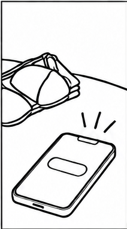 P1 | 0–1s | Extreme close-up (macro) | High, looking down | Locked, slight push | Opens cold | Audio 1 ka-ching, but it's a refund | — | — |
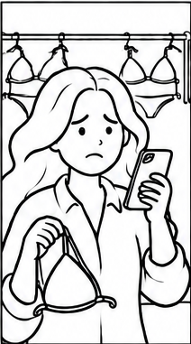 P2 | 1–3s | Close-up | Eye level | Steady | Hard cut | Room tone | Owner (annoyed but disappointed): Oh, for… A refund. | — |
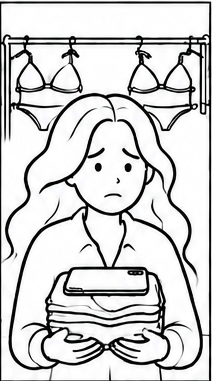 P3 | 3–5s | Medium close-up | Eye level, to lens | Locked | Hard cut | Room tone | Owner (flat): Sales are so low this week. | — |
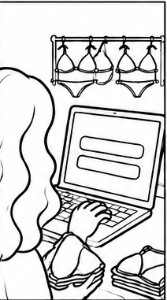 P4 | 5–7s | Over-the-shoulder | Behind, slightly high | Slow push | Hard cut | Room tone drops, close-mic | Owner V.O., lips closed: Maybe it's time for a discount. | — |
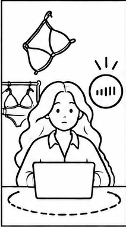 P5 | 7–9s | Medium shot | Eye level | Bullet-time arc around the frozen moment | Freeze (continuous move) | Soft pop as the orb lands | Scout: Not yet. There's something you don't know. | Higgsfield Viral · Bullet time (time freezes, sweeping camera arc) |
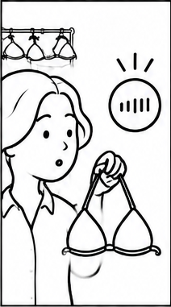 P6 | 9–11s | Close-up, reverse angle | Eye level | 11–12 s she turns; 12 s rise + overhead flip, lands at 13 s | High flip into the bedroom (continuous move) | Whoosh | — | Higgsfield Viral · High flip (camera rises and flips overhead onto a new person and place) |
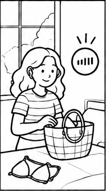 P7 | 11–15s | Medium shot | 45° side | Slow track | Lands from the flip | Bedroom ambience | Scout: You left the Sunset bikini in your cart three times. What stopped you? | — |
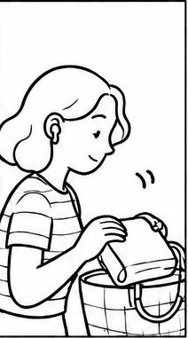 P8 | 15–19s | Close-up, profile | Side-on | Locked | Hard cut | Bag rustle | Shopper (casual): You run a discount every week. I'm just waiting for it. | — |
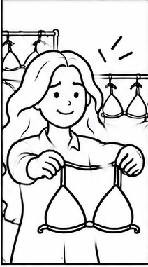 P9 | 19–21s | Medium close-up | Eye level | Hard cut; eyes wide, no smile | Hard cut back | Room tone | Owner (stunned, a shocked realisation): Oh my god… I'm training them to wait. | — |
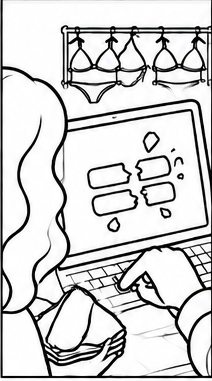 P10 | 21–24s | Over-the-shoulder close-up | Behind, slightly high | Locked | Hard cut | Key click | Owner (decided): You know what? Let's delete all these discounts. Then the trackpad click and a dark "Discount deleted" toast. | — |
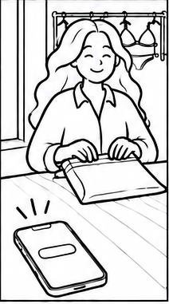 P11 | 24–26s | Close-up, phone in foreground | Table level | Rack focus from phone to her | Time jump (golden light) | Audio 1 ka-ching: full-price sale | Owner (relieved): Glad I asked. | — |
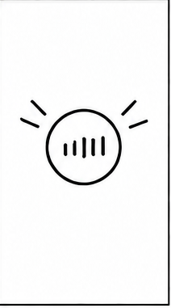 P12 | 26–30s | End screen | Front | Video 1 as is | Orb becomes the 'o' | Scout's voice | Scout: Scout interviews your shoppers for you. Get free early access. | — |
Inspiration, not uploaded. These two preset clips are only here to show the moves. Do not add them to the render: they would take the video references to 28.5 s, close to the 30 s cap.
Bullet time (Higgsfield Viral). Time freezes and the camera sweeps around. Used for 8–11 s: her discount moment stops, a tossed bikini hangs in the air, and Scout pops in.
High flip (Higgsfield Viral). The camera rises, flips overhead and lands on a new person in a new place. Used at 12 s to cross from her studio into the shopper's bedroom, so we feel Scout taking her there instead of being told. The guide asks for a stated trigger point and method (Camera language → transition shots).
| Must fix | What I changed |
|---|---|
| The studio reference (Image 4) had the lime orb baked in, so Scout would likely show up before 8 s. | New Image 4: a clean studio plate with the orb painted out (gpt_image_2_6 edit, 0.25 cr). Scout is now described only once, at 8 s, as "appears for the first time". |
| "Hard cuts only" contradicted the bullet-time arc and the overhead flip. | Notes now say "Hard cuts between shots, except the bullet-time arc at 8s and the overhead flip at 12s." |
| 755 words, which works against "the prompt can be simplified". | Cut to 515 words (66 spoken). Dropped the re-descriptions of the studio, the shopper's earbuds and the bikini on the bed, the "first 1.6 seconds" trim, and every framing note the panels already draw. Kept lines, voices, sound, freeze, flip and time jump. The page's word-count claim is corrected. |
| The shopper's 11-word line in 3 s (about 3.7 words per second). | Her shot is now 17–21 s, 4 s long (2.75 words per second). To keep Scout's 13-word question from getting squeezed, panel 11 went from 3 s to 2 s (one ka-ching plus "Glad I asked"). The end card stays at 4 s. |
| The turn plus the flip in 1 s, landing on the shot boundary. | Panel 6 is now 11–13 s: "11-12s she turns to the orb; at 12s the camera rises and flips, landing at 13s." Timestamps run 0–30 with no gaps. |
| The page overclaimed that every owner panel shows swimwear in her hands and the rail behind her. | Redrew the sheet twice with gpt_image_2_6 (v3, then v4, 0.5 cr). It is still text-free. The rail is now behind her in all 9 owner panels. She holds swimwear in 7 (2, 3, 4, 6, 9, 10, and the frozen bikini in 5). Panel 11 shows a mailer. The claim on the page now says exactly that. |
Nice to have, also done: "never shaky" became "smooth, stabilised camera". The ka-ching is a new 2.0 s file, and the trim instruction is gone. Panel 9 now has a wry closed-mouth half smile, with the top held out by its straps. Panel 2 now has a soft, disappointed frown. Video 1's own sound is settled: it already says the end line (per H158), so the sd25-pe prompt keeps the clip's audio as is. The two preset clips are labelled "inspiration, not uploaded".
Spend in that round (on H217, before H219 was filed): 3 gpt_image_2_6 stills = 0.75 credits (H217 total: 5 stills, 1.25 credits). H219 itself spent nothing. No video generated.
sd25-pe check, Nov 15 2026: the whole skill was re-run against this prompt and every asset (SD25-CHECK.md). It found 6 fails and fixed them: Emile's Nov 15 lines ("Oh my god... I'm training them to wait." as a shocked realisation, and "You know what? Let's delete all these discounts." instead of "Noted."), storyboard panels 9 and 10 no longer adopted for the smile and the breaking form, Scout's lines marked on screen, and the compatibility sentence restored (4.5 s Video 1 in a 30 s output). Shots are re-timed to fit the longer lines; the end screen stays at 26-30 s. The 04 draft below is kept as history.
H219 check 3, fixed: the "not video editing" sentence is gone from the prompt and from 04b: a 4.5 s end-shot clip inside a 30 s storyboard story is ordinary reference generation, not a compatibility conflict. Image 5 now has exactly one role, the shopper's face, hair and clothes; her bedroom is written into the prompt in words. Every upload (Image 1-6, Video 1, Audio 1-3) has one role.
H219 check 2, fixed: Image 5 was merged into one line (that still gave it two roles; fixed in check 3 above). Video 1 is the final shot only, no longer Scout's voice reference. The end line is spoken once, by Video 1's own audio, not written again as dialogue. The visual negative "do not add a second shopper" became "One shopper only". The swimwear line now matches the panels (in hand or within reach). Spend is labelled as H217's, the unsourced 380–740 word range is gone, and the first copy button now copies the sd25-pe prompt.
Judge's verdict (before fixes): "Strong use of the line-art storyboard technique. The sheet has 12 clean panels with no text, and the simplified v2 was kept while the busy v1 was rejected. The mapping goes in upload order and all three of the guide's steps are present. Timestamps are whole seconds with no gaps, and dialogue uses the "Character's line (emotion): {}" format. Limits pass: 6 images; one 4.5 s video; audio clips of 2.6, 13.4 and 11.4 s, 27.5 s in total. Every story beat is there in 66 clean spoken words. Four things should be fixed before a paid render. The studio reference has the orb baked in, so Scout will likely show up in shots before 8 s. "Hard cuts only" contradicts the bullet-time and flip moves. The prompt is 755 words, over the official range [H219 check 2: no such range is in ByteDance's docs], even though the technique's point is a shorter prompt. Two shots are too tight for their content: the shopper line in 3 s and the turn plus flip in 1 s. The page also overclaims that every owner panel shows her holding swimwear in front of the rail."